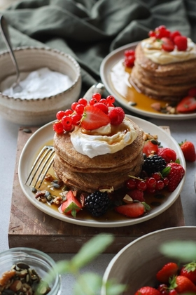

High Protein Vegan Pancakes

Description
These filling, protein rich pancakes are a great start of your day
and can be even made ahead and enjoyed throughout the week.
Just heat them up in a pan, microwave or oven,
top them with your favourite toppings and breakfast is served!
After having this feast, your day is sure to be a good one.
Ingredients
Pancakes
- 11 oz (300 g) silken tofu
- 1½ cups (360 mL) unsweetened pea milk†
- 2 Tbsp (30 mL) maple syrup
- 2 tsp (10 mL) pure vanilla extract
- 2 tsp (10 mL) fresh lemon juice
- 3½ cups (399 g) spelt flour
- 2 tsp (7 g) baking powder
- 1 tsp (5 g) baking soda
- 1 tsp (3 g) ground cinnamon
- ¼ tsp salt
- 1 Tbsp (15 mL) vegetable oil, for frying
Toppings
- 1 cup (240 mL) unsweetened soy Greek-style yogurt
- 1 cup (150 g) fresh mixed berries
- ⅓ cup (48 g) mixed unsalted roasted nuts, chopped (optional)
- 2 Tbsp (18 g) roasted pumpkin seeds, chopped (optional)
- Optional toppings
- maple syrup
- powdered sugar
Steps
- To a blender, add the tofu, pea milk, maple syrup, vanilla, and lemon juice. Blend until smooth.
- To a large bowl, add the spelt flour, baking powder, baking soda, cinnamon, and salt. Mix well. Then add the wet ingredients from the blender. Mix until just combined, but be careful not to over-mix. If the mixture is too thick, add a splash of plant milk to thin it out a touch.
- Heat a non-stick crêpe pan on medium-high heat and use a bit of oil to lightly grease the pan. Use a ¼ measuring cup to pour the batter onto the pan. Cook for 2 minutes on each side, or until golden. Continue with the leftover batter.
- Top with yogurt, nuts, berries, and maple syrup if desired, and enjoy.
All recipes and pictures are from Pick Up Limes site.